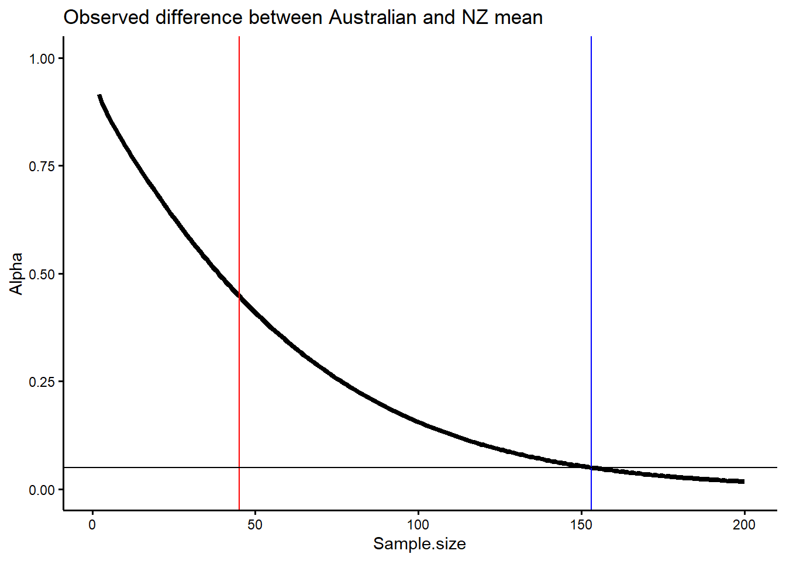
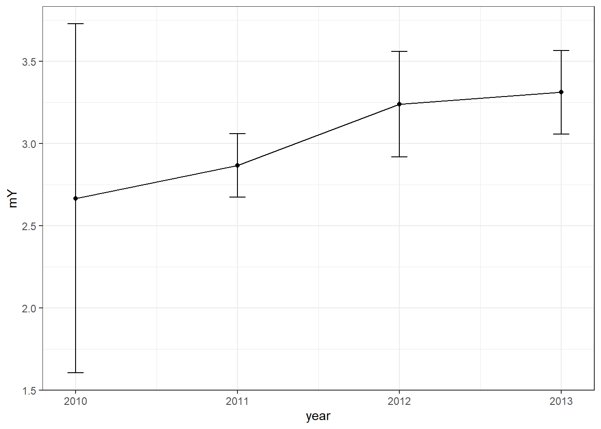

Chapter 2 Calving interval example
##
## > library(boot)
##
## > library(tidyverse)
##
## > library(dplyr)
##
## > library(ggplot2)
##
## > library(qpcR)
##
## > library(pwr)
##
## > library(ggthemes)
##
## > library(gridExtra)
##
## > Data <- read.csv("./R/Data/RawCI.csv", header = T,
## + quote = "\"")
##
## > Year <- unique(Data$Calves.1)
##
## > year2010a <- c(3, 3, 2)
##
## > year2010 <- filter(Data, Calves.1 < 2011)
##
## > year2010 <- year2010$Interval.1[!is.na(year2010$Interval.1)]
##
## > year2011a <- c(3, 3, 2, 3, 3, 3, 3, 3, 3, 3, 3, 3,
## + 3, 3, 2)
##
## > year2011 <- filter(Data, Calves.1 < 2012)
##
## > year2011 <- year2011$Interval.1[!is.na(year2011$Interval.1)]
##
## > year2012a <- c(3, 3, 2, 3, 3, 3, 3, 3, 3, 3, 3, 3,
## + 3, 3, 2, 6, 4, 4, 4, 4, 4, 3, 3, 3, 3)
##
## > year2012 <- filter(Data, Calves.1 < 2013)
##
## > year2012 <- year2012$Interval.1[!is.na(year2012$Interval.1)]
##
## > year2013a <- c(3, 3, 2, 3, 3, 3, 3, 3, 3, 3, 3, 3,
## + 3, 3, 2, 6, 4, 4, 4, 4, 4, 3, 3, 3, 3, 6, 5, 4, 4, 4, 4,
## + 4, 3, 3, 3, 3, 3, 3, 3, 3, .... [TRUNCATED]
##
## > full <- c(Data$Interval.1, Data$Interval.2)
##
## > year2013 <- full[!is.na(unlist(full))]
##
## > mean2010 <- sum(year2010)/length(year2010)
##
## > s2010 <- sd(year2010)
##
## > SE2010 <- s2010/(sqrt(length(year2010)))
##
## > n2010 <- (length(year2010))
##
## > low.qt2010 <- mean2010 - (qt(0.975, length(year2010)) *
## + SE2010)
##
## > high.qt2010 <- mean2010 + (qt(0.975, length(year2010)) *
## + SE2010)
##
## > mean2011 <- sum(year2011)/length(year2011)
##
## > s2011 <- sd(year2011)
##
## > SE2011 <- s2011/(sqrt(length(year2011)))
##
## > n2011 <- (length(year2011))
##
## > low.qt2011 <- mean2011 - (qt(0.975, length(year2011)) *
## + SE2011)
##
## > high.qt2011 <- mean2011 + (qt(0.975, length(year2011)) *
## + SE2011)
##
## > mean2012 <- sum(year2012)/length(year2012)
##
## > s2012 <- sd(year2012)
##
## > SE2012 <- s2012/(sqrt(length(year2012)))
##
## > n2012 <- (length(year2012))
##
## > low.qt2012 <- mean2012 - (qt(0.975, length(year2012)) *
## + SE2012)
##
## > high.qt2012 <- mean2012 + (qt(0.975, length(year2012)) *
## + SE2012)
##
## > mean2013 <- sum(year2013)/length(year2013)
##
## > s2013 <- sd(year2013)
##
## > SE2013 <- s2013/(sqrt(length(year2013)))
##
## > n2013 <- (length(year2013))
##
## > low.qt2013 <- mean2013 - (qt(0.975, length(year2013)) *
## + SE2013)
##
## > high.qt2013 <- mean2013 + (qt(0.975, length(year2013)) *
## + SE2013)
##
## > n <- c(length(year2010), length(year2011), length(year2012),
## + length(year2013))
##
## > mY <- c(mean(year2010), mean(year2011), mean(year2012),
## + mean(year2013))
##
## > year <- Year
##
## > low.qt <- c(low.qt2010, low.qt2011, low.qt2012, low.qt2013)
##
## > high.qt <- c(high.qt2010, high.qt2011, high.qt2012,
## + high.qt2013)
##
## > sd <- c(s2010, s2011, s2012, s2013)
##
## > sum.dat <- cbind(year, n, mY, low.qt, high.qt, sd)
##
## > sum.dat <- as.data.frame(sum.dat)
##
## > library(knitr)
##
## > kable(sum.dat, format = "markdown")
##
##
## | year| n| mY| low.qt| high.qt| sd|
## |----:|--:|--------:|--------:|--------:|---------:|
## | 2010| 3| 2.666667| 1.605851| 3.727482| 0.5773503|
## | 2011| 15| 2.866667| 2.673022| 3.060312| 0.3518658|
## | 2012| 25| 3.240000| 2.919170| 3.560830| 0.7788881|
## | 2013| 45| 3.311111| 3.056488| 3.565734| 0.8480518|
##
## > ggplot(sum.dat, aes(y = mY, x = year)) + geom_point() +
## + geom_line() + geom_errorbar(aes(ymin = low.qt, ymax = high.qt),
## + width = 0.1) + .... [TRUNCATED]
##
## > par(mfrow = c(2, 2))
##
## > plot(factor(year2010), xlim = c(0, 6), ylim = c(0,
## + 40))##
## > title(main = "a)", sub = "Sample size 3", ylab = "Frequency",
## + xlab = "Calving interval", cex.main = 1.5, font.main = 4,
## + col.main = "bl ..." ... [TRUNCATED]
##
## > box()
##
## > plot(factor(year2011), xlim = c(0, 6), ylim = c(0,
## + 40))##
## > title(main = "b)", sub = "Sample size 15", ylab = "Frequency",
## + xlab = "Calving interval", col.main = 4, cex.main = 1.5,
## + font.main = 4, .... [TRUNCATED]
##
## > box()
##
## > plot(factor(year2012), xlim = c(0, 6), ylim = c(0,
## + 40))##
## > title(main = "c)", sub = "Sample size 25", ylab = "Frequency",
## + xlab = "Calving interval", col.main = 4, cex.main = 1.5,
## + font.main = 4, .... [TRUNCATED]
##
## > box()
##
## > plot(factor(year2013), xlim = c(0, 6), ylim = c(0,
## + 40))##
## > title(main = "d)", sub = "Sample size 45", ylab = "Frequency",
## + xlab = "Calving interval", col.main = 4, cex.main = 1.5,
## + font.main = 4, .... [TRUNCATED]
##
## > box()
##
## > library(qpcR)
##
## > rawdata <- qpcR:::cbind.na(year2010, year2011, year2012,
## + year2013)
##
## > rawdata <- as.data.frame(rawdata)
##
## > year2010 <- data.frame(year2010, year = c("2010"))
##
## > year2010 <- rename(year2010, interval = year2010,
## + year = year)
##
## > year2011 <- data.frame(year2011, year = c("2011"))
##
## > year2011 <- rename(year2011, interval = year2011,
## + year = year)
##
## > year2012 <- data.frame(year2012, year = c("2012"))
##
## > year2012 <- rename(year2012, interval = year2012,
## + year = year)
##
## > year2013 <- data.frame(year2013, year = c("2013"))
##
## > year2013 <- rename(year2013, interval = year2013,
## + year = year)
##
## > ggplotraw <- rbind(year2010, year2011, year2012, year2013)
##
## > ggplotraw$interval <- as.numeric(as.character(ggplotraw$interval))
##
## > ggplot(year2013, aes(x = interval)) + geom_bar(alpha = 1,
## + width = 0.9, fill = "black") + xlab(expression("Calving" ~
## + "interval" ~ (ita .... [TRUNCATED]
##
## > RealCI <- as.numeric(year2013$interval)
##
## > xlong <- RealCI
##
## > meanlong <- sum(xlong)/length(xlong)
##
## > slong <- sd(xlong)
##
## > SElong <- slong/(sqrt(length(xlong)))
##
## > nlong <- (length(xlong))
##
## > lowqtlong <- meanlong - (qt(0.975, nlong) * SElong)
##
## > highqtlong <- meanlong + (qt(0.975, nlong) * SElong)
##
## > MedCI <- c(RealCI[RealCI < 5], 3, 3, 3, 3, 2, 3)
##
## > xmed <- MedCI
##
## > meanmed <- sum(xmed)/length(xmed)
##
## > smed <- sd(xmed)
##
## > SEmed <- smed/(sqrt(length(xmed)))
##
## > nmed <- (length(xmed))
##
## > lowqtmed <- meanmed - (qt(0.975, length(xmed)) * SEmed)
##
## > highqtmed <- meanmed + (qt(0.975, length(xmed)) *
## + SEmed)
##
## > LowCI <- c(RealCI[RealCI < 4], 3, 3, 3, 3, 3, 2, 2,
## + 2, 2, 2, 2, 2, 2, 2, 2, 2, 2, 2, 2, 2, 2, 2, 2, 2, 2, 2)
##
## > xshort <- LowCI
##
## > meanshort <- mean(xshort)
##
## > sshort <- sd(xshort)
##
## > SEshort <- sshort/(sqrt(length(xshort)))
##
## > lowqtshort <- meanshort - (qt(0.975, length(xshort)) *
## + SEshort)
##
## > highqtshort <- meanshort + (qt(0.975, length(xshort)) *
## + SEshort)
##
## > bdata <- qpcR:::cbind.na(RealCI, MedCI, LowCI)
##
## > bdata <- as.data.frame(bdata)
##
## > par(mfrow = c(1, 3))
##
## > plot(factor(bdata$LowCI), main = "Lowest possible interval")##
## > plot(factor(bdata$MedCI), main = "Medium possible interval")##
## > plot(factor(bdata$RealCI), main = "Observed interval")##
## > par(mfrow = c(3, 1))
##
## > plot(density(as.numeric(as.character(LowCI)), bw = 0.5),
## + main = "Lowest possible interval")##
## > plot(density(as.numeric(as.character(MedCI)), bw = 0.5),
## + main = "Medium possible interval")##
## > plot(density(as.numeric(as.character(RealCI)), bw = 0.5),
## + main = "Observed interval")
##
## > Sumtable <- data.frame(variable = c("low.qt", "mean",
## + "high.qt", "sd", "SE"), short = c(lowqtshort, meanshort,
## + highqtshort, sshort, SE .... [TRUNCATED]
##
## > n <- c(length(LowCI), length(MedCI), length(year2013$interval))
##
## > mY <- c(mean(LowCI), mean(MedCI), mean(year2013$interval))
##
## > interval <- c("Low", "Medium", "Observed")
##
## > low.qt <- c(lowqtshort, lowqtmed, low.qt2013)
##
## > high.qt <- c(highqtshort, highqtmed, high.qt2013)
##
## > sd <- c(sshort, smed, s2013)
##
## > Sumtable <- cbind(interval, n, mY, low.qt, high.qt,
## + sd)
##
## > Sumtable <- as.data.frame(Sumtable)
##
## > Sumtable$n <- as.numeric(as.character(Sumtable$n))
##
## > Sumtable$mY <- as.numeric(as.character(Sumtable$mY))
##
## > Sumtable$low.qt <- as.numeric(as.character(Sumtable$low.qt))
##
## > Sumtable$high.qt <- as.numeric(as.character(Sumtable$high.qt))
##
## > Sumtable$sd <- as.numeric(as.character(Sumtable$sd))
##
## > Sumtable$interval <- as.character(Sumtable$interval)
##
## > ggplot(Sumtable, aes(y = mY, x = interval)) + geom_point(size = 5) +
## + geom_errorbar(aes(ymin = low.qt, ymax = high.qt), width = 0.05,
## + .... [TRUNCATED]
##
## > library(knitr)
##
## > kable(Sumtable, format = "markdown", col.names = c("Interval",
## + "Sample size", "Mean", "Lower limit", "Higher limit", "SD"))
##
##
## |Interval | Sample size| Mean| Lower limit| Higher limit| SD|
## |:--------|-----------:|--------:|-----------:|------------:|---------:|
## |Low | 58| 2.568966| 2.437666| 2.700265| 0.4995461|
## |Medium | 48| 3.104167| 2.943089| 3.265244| 0.5550382|
## |Observed | 45| 3.311111| 3.056488| 3.565734| 0.8480518|
##
## > library(knitr)
##
## > srwdat <- read.csv(file = "./R/Data/srw_data.csv")
##
## > kable(srwdat, format = "markdown", col.names = c("Sample size",
## + "Mean", "Lower limit", "Higher limit", "SE", "Author", "Location"))
##
##
## | Sample size| Mean| Lower limit| Higher limit| SE|Author |Location |
## |-----------:|----:|-----------:|------------:|----:|:------------------|:---------------------------------|
## | NA| 3.12| 3.07| 3.17| NA|Best et al. 2001 |South Africa |
## | 1504| 3.15| 3.11| 3.18| NA|Best et al. 2005 |South Africa (1971-2003 Updated) |
## | NA| 3.16| 3.13| 3.19| NA|Brandao et al 2010 |South Africa ( 1971-2006 Updated) |
## | NA| 3.35| NA| NA| 0.05|Cooke et al. 2001 |Argentina |
## | 749| 3.42| NA| NA| 0.11|Cooke et al. 2003 |Argentina |
## | NA| 3.63| NA| NA| 0.13|Burnell 2001 |Australia |
##
## > SAreps <- 1500
##
## > ARreps <- 800
##
## > Aussiereps <- 2000
##
## > low <- 1000
##
## > verylow <- 100
##
## > lowest <- 10
##
## > par(mfrow = c(2, 3))
##
## > plot(factor(sample(year2013$interval, lowest, replace = T)),
## + main = "3 intervals")##
## > plot(factor(sample(year2013$interval, verylow, replace = T)),
## + main = "10 intervals")##
## > plot(factor(sample(year2013$interval, low, replace = T)),
## + main = "30 intervals")##
## > plot(factor(sample(year2013$interval, Aussiereps,
## + replace = T)), main = "500 intervals")##
## > plot(factor(sample(year2013$interval, ARreps, replace = T)),
## + main = "800 intervals")##
## > plot(factor(sample(year2013$interval, SAreps, replace = T)),
## + main = "1500 intervals")
##
## > boots <- 1000
##
## > n <- c(1:1000)
##
## > var10 <- paste0("n_", 1:10)
##
## > sample10 <- matrix(data = NA, ncol = lowest, nrow = boots)
##
## > colnames(sample10) <- as.list(var10)
##
## > for (i in 1:boots) {
## + sample10[i, ] <- sample(year2013$interval, lowest, replace = T)
## + }
##
## > sample10 <- as.data.frame(sample10)
##
## > sample10 <- sample10 %>% mutate(mean10 = rowMeans(sample10))
##
## > sample10t <- as.matrix(sample10)
##
## > sample10t <- t(sample10t)
##
## > var100 <- paste0("n_", 1:100)
##
## > sample100 <- matrix(data = NA, ncol = verylow, nrow = boots)
##
## > colnames(sample100) <- as.list(var100)
##
## > for (i in 1:boots) {
## + sample100[i, ] <- sample(year2013$interval, verylow, replace = T)
## + }
##
## > sample100 <- as.data.frame(sample100)
##
## > sample100 <- sample100 %>% mutate(mean100 = rowMeans(sample100))
##
## > var500 <- paste0("n_", 1:500)
##
## > sample500 <- matrix(data = NA, ncol = 500, nrow = boots)
##
## > colnames(sample500) <- as.list(var500)
##
## > for (i in 1:boots) {
## + sample500[i, ] <- sample(year2013$interval, 500, replace = T)
## + }
##
## > sample500 <- as.data.frame(sample500)
##
## > sample500 <- sample500 %>% mutate(mean500 = rowMeans(sample500))
##
## > var1000 <- paste0("n_", 1:1000)
##
## > sample1000 <- matrix(data = NA, ncol = low, nrow = boots)
##
## > colnames(sample1000) <- as.list(var1000)
##
## > for (i in 1:boots) {
## + sample1000[i, ] <- sample(year2013$interval, low, replace = T)
## + }
##
## > sample1000 <- as.data.frame(sample1000)
##
## > sample1000 <- sample1000 %>% mutate(mean1000 = rowMeans(sample1000))
##
## > varA <- paste0("n_", 1:2000)
##
## > sampleA <- matrix(data = NA, ncol = Aussiereps, nrow = boots)
##
## > colnames(sampleA) <- as.list(varA)
##
## > for (i in 1:boots) {
## + sampleA[i, ] <- sample(year2013$interval, Aussiereps, replace = T)
## + }
##
## > sampleA <- as.data.frame(sampleA)
##
## > sampleA <- sampleA %>% mutate(meanA = rowMeans(sampleA))
##
## > sampleAt <- t(sampleA)
##
## > for (i in c(1:ncol(sampleA))) {
## + sampleA[, i] <- as.numeric(as.character(sampleA[, i]))
## + }
##
## > ab <- sort(sampleA$meanA)
##
## > nab <- length(ab)
##
## > ab2.5 <- ab[25]
##
## > ab0.97.5 <- ab[975]
##
## > ab <- sort(sampleA$meanA)
##
## > nab <- length(ab)
##
## > ab2.5 <- ab[25]
##
## > ab0.97.5 <- ab[975]
##
## > par(mfrow = c(1, 1))
##
## > plot(density(sample10$mean10, bw = 0.05), col = "black",
## + lty = 1, main = "", lwd = 5, ylim = c(0, 8), xlim = c(2,
## + 4.5), axes = FAL .... [TRUNCATED]##
## > lines(density(sample100$mean100, bw = 0.05), col = "black",
## + lty = 2, lwd = 4)
##
## > lines(density(sample500$mean500, bw = 0.05), col = "black",
## + lty = 3, lwd = 3)
##
## > lines(density(sample1000$mean1000, bw = 0.05), col = "black",
## + lty = 4, lwd = 2)
##
## > lines(density(sampleA$meanA, bw = 0.05), col = "black",
## + lty = 5, lwd = 1)
##
## > legend("topright", title = "Legend", c("n=10, cv=8.12 ",
## + "n=100, cv=2.43", "n=500, c.v=1.15", "n=1000, cv=0.79", "n=2000, cv=0.56"),
## + b .... [TRUNCATED]
##
## > axis(1, lwd = 2)
##
## > axis(2, lwd = 2)
##
## > plot(density(sample10$mean10, bw = 0.05), col = "black",
## + lty = 3, main = "", lwd = 1, ylim = c(0, 8), xlim = c(2.5,
## + 4.5), axes = F .... [TRUNCATED]
##
## > lines(density(sample100$mean100, bw = 0.05), col = "black",
## + lty = 4, lwd = 1)
##
## > lines(density(sample500$mean500, bw = 0.05), col = "black",
## + lty = 5, lwd = 1)
##
## > lines(density(sample1000$mean1000, bw = 0.05), col = "black",
## + lty = 2, lwd = 1)
##
## > lines(density(sampleA$meanA, bw = 0.05), col = "black",
## + lty = 1, lwd = 2)
##
## > legend(y = 8, x = 3.9, title = expression(bold("Sample size (n)")),
## + c(expression(italic("n") ~ "=" ~ "10"), expression(italic("n") ~
## + .... [TRUNCATED]
##
## > axis(1, lwd = 2)
##
## > axis(2, lwd = 2)
##
## > rev.one <- bdata$RealCI[1:45]
##
## > sample.true <- year2013$interval
##
## > pwr.test.results <- power.t.test(n = 45, delta = seq(0,
## + 0.99, 0.001), sd = sd(sample.true), alternative = "one.sided",
## + sig.level = 0.0 .... [TRUNCATED]
##
## > pwr.analysis <- as.data.frame(cbind(pwr.test.results$power,
## + pwr.test.results$delta))
##
## > colnames(pwr.analysis) <- c("Power", "Mean.difference")
##
## > pwr.analysis.1 <- pwr.analysis %>% mutate(Alpha = 1 -
## + Power, Mean.estimate = 3.31 + Mean.difference)
##
## > a <- filter(pwr.analysis.1, Alpha < 0.05)
##
## > a[1, ]
## Power Mean.difference Alpha Mean.estimate
## 1 0.9501505 0.593 0.04984946 3.903
##
## > ggplot(data = pwr.analysis.1, aes(x = Mean.estimate,
## + y = Alpha)) + geom_line(size = 1.5) + geom_vline(xintercept = 3.903,
## + col = "blue" .... [TRUNCATED]##
## > rev.one <- bdata$RealCI[1:45]
##
## > sample.true <- year2013$interval
##
## > diff <- 3.63 - 3.31
##
## > pwr.test.results <- power.t.test(n = seq(1, 200, 1),
## + delta = diff, sd = sd(sample.true), alternative = "one.sided",
## + sig.level = 0.05)## Warning in qt(sig.level/tside, nu, lower.tail = FALSE): NaNs produced
##
## > pwr.analysis <- as.data.frame(cbind(pwr.test.results$power,
## + pwr.test.results$n))
##
## > colnames(pwr.analysis) <- c("Power", "Sample.size")
##
## > pwr.analysis.1 <- pwr.analysis %>% mutate(Alpha = 1 -
## + Power)
##
## > a <- filter(pwr.analysis.1, Alpha < 0.05)
##
## > a[1, ]
## Power Sample.size Alpha
## 1 0.9503366 153 0.0496634
##
## > ggplot(data = pwr.analysis.1, aes(x = Sample.size,
## + y = Alpha)) + geom_line(size = 1.5) + geom_vline(xintercept = 45,
## + col = "red") + ge .... [TRUNCATED]## Warning: Removed 1 rows containing missing values (geom_path).##
## > dat <- read.csv("./R/Data/raw_observations_2012.csv")
##
## > glimpse(dat)
## Observations: 180
## Variables: 10
## $ ID <fct> AI06006, AI06007, AI06015, AI06022, AI06038, AI100...
## $ X2006 <int> 1, 2, 2, 1, 1, 0, 0, 0, 0, 0, 0, 0, 0, 0, 0, 0, 0,...
## $ X2007 <int> 0, 1, 1, 0, 0, 0, 0, 0, 0, 0, 0, 0, 0, 0, 0, 0, 0,...
## $ X2008 <int> 1, 0, 1, 0, 2, 0, 1, 0, 0, 0, 0, 0, 0, 0, 1, 0, 0,...
## $ X2009 <int> 0, 0, 0, 0, 0, 0, 0, 0, 0, 0, 0, 0, 0, 0, 0, 0, 0,...
## $ X2010 <int> 0, 0, 2, 0, 0, 6, 6, 5, 5, 3, 4, 2, 5, 4, 5, 3, 2,...
## $ X2011 <int> 0, 0, 0, 0, 0, 0, 0, 0, 0, 0, 0, 0, 0, 0, 0, 0, 0,...
## $ X2012 <int> 0, 1, 2, 4, 0, 0, 0, 0, 0, 0, 5, 0, 0, 12, 0, 0, 0...
## $ total <int> 2, 4, 8, 5, 3, 6, 7, 5, 5, 3, 9, 2, 5, 16, 6, 3, 2...
## $ X..yrs.seen <int> 2, 3, 5, 2, 2, 1, 2, 1, 1, 1, 2, 1, 1, 2, 2, 1, 1,...
##
## > head(dat)
## ID X2006 X2007 X2008 X2009 X2010 X2011 X2012 total X..yrs.seen
## 1 AI06006 1 0 1 0 0 0 0 2 2
## 2 AI06007 2 1 0 0 0 0 1 4 3
## 3 AI06015 2 1 1 0 2 0 2 8 5
## 4 AI06022 1 0 0 0 0 0 4 5 2
## 5 AI06038 1 0 2 0 0 0 0 3 2
## 6 AI10040 0 0 0 0 6 0 0 6 1
##
## > dat1 <- read.csv("./R/Data/RawCI.csv", header = T,
## + quote = "\"")
##
## > glimpse(dat1)
## Observations: 41
## Variables: 8
## $ ID <fct> AI10124, AI10070, AI10086, AI08340, AI08341, AI0...
## $ Yr.first.seen <int> 2007, 2008, 2007, 2008, 2008, 2008, 2008, 2008, ...
## $ Calves <int> 2007, 2008, 2007, 2008, 2008, 2008, 2008, 2008, ...
## $ Calves.1 <int> 2010, 2010, 2010, 2011, 2011, 2011, 2011, 2011, ...
## $ Calves.2 <int> 2013, 2013, 2013, NA, NA, NA, NA, NA, NA, NA, NA...
## $ Interval.1 <int> 3, 2, 3, 3, 3, 3, 3, 3, 3, 3, 3, 3, 3, 3, 2, 6, ...
## $ Interval.2 <int> 3, 3, 3, NA, NA, NA, NA, NA, NA, NA, NA, NA, NA,...
## $ X <lgl> NA, NA, NA, NA, NA, NA, NA, NA, NA, NA, NA, NA, ...
##
## > dat3 <- dplyr::select(dat, ID, X2006:X2012) %>% gather(year,
## + count, X2006:X2012)
##
## > dat4 <- full_join(dat3, dat1, by = "ID")## Warning: Column `ID` joining factors with different levels, coercing to
## character vector
##
## > dat5 <- dplyr::select(dat4, ID, year, count, Yr.first.seen,
## + Calves, Calves.1, Calves.2)
##
## > dat6 <- filter(dat5, count > 0)
##
## > glimpse(dat6)
## Observations: 237
## Variables: 7
## $ ID <chr> "AI06006", "AI06007", "AI06015", "AI06022", "AI0...
## $ year <chr> "X2006", "X2006", "X2006", "X2006", "X2006", "X2...
## $ count <int> 1, 2, 2, 1, 1, 1, 1, 1, 1, 1, 1, 1, 1, 1, 1, 1, ...
## $ Yr.first.seen <int> NA, NA, NA, 2006, NA, NA, NA, 2007, 2007, NA, NA...
## $ Calves <int> NA, NA, NA, 2006, NA, NA, NA, 2007, 2007, NA, NA...
## $ Calves.1 <int> NA, NA, NA, 2012, NA, NA, NA, 2013, 2010, NA, NA...
## $ Calves.2 <int> NA, NA, NA, NA, NA, NA, NA, NA, 2013, NA, NA, 20...
##
## > dat7 <- mutate(dat6, year = ifelse(year == "X2006",
## + "2006", year), year = ifelse(year == "X2007", "2007", year),
## + year = ifelse(year == .... [TRUNCATED]
##
## > a <- group_by(dat7, ID, Yr.first.seen) %>% mutate(mother = ifelse(Yr.first.seen >
## + 0, 1, 0)) %>% filter(mother == 1) %>% ungroup() %>% dplyr:: .... [TRUNCATED]
##
## > a
## # A tibble: 1 x 4
## ID year Calves Calves.1
## <chr> <chr> <int> <int>
## 1 AI09216 2007 2009 2011
##
## > greater.than.2 <- sample.true[sample.true > 2]
##
## > mean.2 <- sum(greater.than.2)/length(greater.than.2)
##
## > s.2 <- sd(greater.than.2)
##
## > SE.2 <- s2013/(sqrt(length(greater.than.2)))
##
## > n.2 <- length(greater.than.2)
##
## > low.qt.2 <- mean.2 - (qt(0.975, length(greater.than.2)) *
## + SE.2)
##
## > high.qt.2 <- mean.2 + (qt(0.975, length(greater.than.2)) *
## + SE.2)
##
## > Sumtable[4, ] <- c("miss2year", n.2, mean.2, low.qt.2,
## + high.qt.2, sd(greater.than.2))
##
## > boots <- 1000
##
## > n <- c(1:1000)
##
## > detect1 <- 44
##
## > detect2 <- 42
##
## > detect3 <- 40
##
## > sample2 <- rep(NA, 1000)
##
## > sample5 <- rep(NA, 1000)
##
## > sample10 <- rep(NA, 1000)
##
## > for (i in 1:boots) {
## + sample2[i] <- mean(sample(year2013$interval, detect1, replace = T))
## + sample5[i] <- mean(sample(year2013$interval, de .... [TRUNCATED]
##
## > sample2 <- sort(sample2)
##
## > sample2.2.5 <- sample2[25]
##
## > sample2.50 <- sample2[500]
##
## > sample2.975 <- sample2[975]
##
## > sample5 <- sort(sample5)
##
## > sample5.2.5 <- sample5[25]
##
## > sample5.50 <- sample5[500]
##
## > sample5.975 <- sample5[975]
##
## > sample10 <- sort(sample10)
##
## > sample10.2.5 <- sample10[25]
##
## > sample10.50 <- sample10[500]
##
## > sample10.975 <- sample10[975]
##
## > Sumtable[5, ] <- c("detect1", detect1, sample2.50,
## + sample2.2.5, sample2.975, NA)
##
## > Sumtable[6, ] <- c("detect2", detect2, sample5.50,
## + sample5.2.5, sample5.975, NA)
##
## > Sumtable[7, ] <- c("detect5", detect3, sample10.50,
## + sample10.2.5, sample10.975, NA)
##
## > length(Data$ID)
## [1] 41
##
## > length(dat$ID)
## [1] 180
##
## > glimpse(Data)
## Observations: 41
## Variables: 8
## $ ID <fct> AI10124, AI10070, AI10086, AI08340, AI08341, AI0...
## $ Yr.first.seen <int> 2007, 2008, 2007, 2008, 2008, 2008, 2008, 2008, ...
## $ Calves <int> 2007, 2008, 2007, 2008, 2008, 2008, 2008, 2008, ...
## $ Calves.1 <int> 2010, 2010, 2010, 2011, 2011, 2011, 2011, 2011, ...
## $ Calves.2 <int> 2013, 2013, 2013, NA, NA, NA, NA, NA, NA, NA, NA...
## $ Interval.1 <int> 3, 2, 3, 3, 3, 3, 3, 3, 3, 3, 3, 3, 3, 3, 2, 6, ...
## $ Interval.2 <int> 3, 3, 3, NA, NA, NA, NA, NA, NA, NA, NA, NA, NA,...
## $ X <lgl> NA, NA, NA, NA, NA, NA, NA, NA, NA, NA, NA, NA, ...
##
## > dat.detect <- dplyr::select(Data, ID, Calves, Calves.1,
## + Calves.2) %>% mutate(Calves = factor(Calves), Calves.1 = factor(Calves.1),
## + Cal .... [TRUNCATED]
##
## > a <- as.data.frame.matrix(table(Data$ID, Data$Calves))
##
## > head(a)
## 2006 2007 2008 2009 2010 2011
## AI06022 1 0 0 0 0 0
## AI08340 0 0 1 0 0 0
## AI08341 0 0 1 0 0 0
## AI08343 0 0 1 0 0 0
## AI08355 0 0 1 0 0 0
## AI08362 0 0 1 0 0 0
##
## > a[, 7] <- row.names(a)
##
## > colnames(a)[1] <- "y2006"
##
## > colnames(a)[2] <- "y2007"
##
## > colnames(a)[3] <- "y2008"
##
## > colnames(a)[4] <- "y2009"
##
## > colnames(a)[5] <- "y2010"
##
## > colnames(a)[6] <- "y2011"
##
## > colnames(a)[7] <- "ID"
##
## > a[, 8] <- 0
##
## > colnames(a)[8] <- "y2012"
##
## > a[, 9] <- 0
##
## > colnames(a)[9] <- "y2013"
##
## > a <- dplyr::select(a, ID, y2006, y2007, y2008, y2009,
## + y2010, y2011, y2012, y2013)
##
## > b <- as.data.frame.matrix(table(Data$ID, Data$Calves.1))
##
## > head(b)
## 2010 2011 2012 2013
## AI06022 0 0 1 0
## AI08340 0 1 0 0
## AI08341 0 1 0 0
## AI08343 0 0 0 1
## AI08355 0 1 0 0
## AI08362 0 1 0 0
##
## > b[, 5] <- row.names(b)
##
## > colnames(b)[5] <- "ID"
##
## > b[, 6] <- 0
##
## > colnames(b)[6] <- "y2006"
##
## > b[, 7] <- 0
##
## > colnames(b)[7] <- "y2007"
##
## > b[, 8] <- 0
##
## > colnames(b)[8] <- "y2008"
##
## > b[, 9] <- 0
##
## > colnames(b)[9] <- "y2009"
##
## > colnames(b)[1] <- "y2010"
##
## > colnames(b)[2] <- "y2011"
##
## > colnames(b)[3] <- "y2012"
##
## > colnames(b)[4] <- "y2013"
##
## > b <- dplyr::select(b, ID, y2006, y2007, y2008, y2009,
## + y2010, y2011, y2012, y2013)
##
## > c <- as.data.frame.matrix(table(Data$ID, Data$Calves.2))
##
## > head(c)
## 2013
## AI06022 0
## AI08340 0
## AI08341 0
## AI08343 0
## AI08355 0
## AI08362 0
##
## > colnames(c)[1] <- "y2013"
##
## > c[, 2] <- row.names(c)
##
## > colnames(c)[2] <- "ID"
##
## > c[, 3] <- 0
##
## > colnames(c)[3] <- "y2006"
##
## > c[, 4] <- 0
##
## > colnames(c)[4] <- "y2007"
##
## > c[, 5] <- 0
##
## > colnames(c)[5] <- "y2008"
##
## > c[, 6] <- 0
##
## > colnames(c)[6] <- "y2009"
##
## > c[, 7] <- 0
##
## > colnames(c)[7] <- "y2010"
##
## > c[, 8] <- 0
##
## > colnames(c)[8] <- "y2011"
##
## > c[, 9] <- 0
##
## > colnames(c)[9] <- "y2012"
##
## > c <- dplyr::select(c, ID, y2006, y2007, y2008, y2009,
## + y2010, y2011, y2012, y2013)
##
## > countdat <- rbind(a, b, c)
##
## > glimpse(countdat)
## Observations: 123
## Variables: 9
## $ ID <chr> "AI06022", "AI08340", "AI08341", "AI08343", "AI08355", "...
## $ y2006 <dbl> 1, 0, 0, 0, 0, 0, 0, 0, 0, 0, 0, 0, 0, 0, 0, 0, 0, 0, 0,...
## $ y2007 <dbl> 0, 0, 0, 0, 0, 0, 0, 0, 0, 0, 0, 0, 0, 0, 0, 0, 0, 0, 0,...
## $ y2008 <dbl> 0, 1, 1, 1, 1, 1, 1, 1, 1, 1, 1, 1, 1, 1, 1, 1, 1, 0, 0,...
## $ y2009 <dbl> 0, 0, 0, 0, 0, 0, 0, 0, 0, 0, 0, 0, 0, 0, 0, 0, 0, 1, 1,...
## $ y2010 <dbl> 0, 0, 0, 0, 0, 0, 0, 0, 0, 0, 0, 0, 0, 0, 0, 0, 0, 0, 0,...
## $ y2011 <dbl> 0, 0, 0, 0, 0, 0, 0, 0, 0, 0, 0, 0, 0, 0, 0, 0, 0, 0, 0,...
## $ y2012 <dbl> 0, 0, 0, 0, 0, 0, 0, 0, 0, 0, 0, 0, 0, 0, 0, 0, 0, 0, 0,...
## $ y2013 <dbl> 0, 0, 0, 0, 0, 0, 0, 0, 0, 0, 0, 0, 0, 0, 0, 0, 0, 0, 0,...
##
## > full.dat <- group_by(countdat, ID) %>% summarise(y2006 = sum(y2006),
## + y2007 = sum(y2007), y2008 = sum(y2008), y2009 = sum(y2009),
## + y2010 .... [TRUNCATED]
##
## > 2012 - 2006
## [1] 6
##
## > sort(Data$ID)
## [1] AI06022 AI08340 AI08341 AI08343 AI08355 AI08362 AI08364 AI08365
## [9] AI08372 AI08378 AI08379 AI08383 AI08386 AI08387 AI08390 AI08395
## [17] AI08403 AI09216 AI09217 AI09221 AI09224 AI09225 AI09247 AI09249
## [25] AI09259 AI09265 AI09289 AI10043 AI10056 AI10070 AI10085 AI10086
## [33] AI10102 AI10124 AI10144 AI10160 AI10167 AI10170 AI10177 AI11408
## [41] AI11430
## 41 Levels: AI06022 AI08340 AI08341 AI08343 AI08355 AI08362 ... AI11430
##
## > filter(Data, ID == "AI06022")
## ID Yr.first.seen Calves Calves.1 Calves.2 Interval.1 Interval.2 X
## 1 AI06022 2006 2006 2012 NA 6 NA NA
##
## > filter(Data, ID == "AI08340")
## ID Yr.first.seen Calves Calves.1 Calves.2 Interval.1 Interval.2 X
## 1 AI08340 2008 2008 2011 NA 3 NA NA
##
## > filter(Data, ID == "AI08343")
## ID Yr.first.seen Calves Calves.1 Calves.2 Interval.1 Interval.2 X
## 1 AI08343 2008 2008 2013 NA 5 NA NA
##
## > head(Data)
## ID Yr.first.seen Calves Calves.1 Calves.2 Interval.1 Interval.2 X
## 1 AI10124 2007 2007 2010 2013 3 3 NA
## 2 AI10070 2008 2008 2010 2013 2 3 NA
## 3 AI10086 2007 2007 2010 2013 3 3 NA
## 4 AI08340 2008 2008 2011 NA 3 NA NA
## 5 AI08341 2008 2008 2011 NA 3 NA NA
## 6 AI08355 2008 2008 2011 NA 3 NA NA
##
## > longer5.6 <- c(sample.true, 5, 6, 6)
##
## > mean.56 <- sum(longer5.6)/length(longer5.6)
##
## > s.56 <- sd(longer5.6)
##
## > SE.56 <- s.56/(sqrt(length(longer5.6)))
##
## > n.56 <- (length(longer5.6))
##
## > low.qt.56 <- mean.56 - (qt(0.975, length(longer5.6)) *
## + SE.56)
##
## > high.qt.56 <- mean.56 + (qt(0.975, length(longer5.6)) *
## + SE.56)
##
## > Sumtable[8, ] <- c("longer.56", n.56, mean.56, low.qt.56,
## + high.qt.56, sd(longer5.6))
##
## > Sumtable <- as.data.frame(Sumtable)
##
## > Sumtable$n <- as.numeric(as.character(Sumtable$n))
##
## > Sumtable$mY <- as.numeric(as.character(Sumtable$mY))
##
## > Sumtable$low.qt <- as.numeric(as.character(Sumtable$low.qt))
##
## > Sumtable$high.qt <- as.numeric(as.character(Sumtable$high.qt))
##
## > Sumtable$sd <- as.numeric(as.character(Sumtable$sd))
##
## > Sumtable$interval <- as.character(Sumtable$interval)
##
## > library(knitr)
##
## > kable(Sumtable, format = "markdown", col.names = c("Interval",
## + "Sample size", "Mean", "Lower limit", "Higher limit", "SD"))
##
##
## |Interval | Sample size| Mean| Lower limit| Higher limit| SD|
## |:---------|-----------:|--------:|-----------:|------------:|---------:|
## |Low | 58| 2.568966| 2.437666| 2.700265| 0.4995461|
## |Medium | 48| 3.104167| 2.943089| 3.265244| 0.5550382|
## |Observed | 45| 3.311111| 3.056488| 3.565734| 0.8480518|
## |miss2year | 41| 3.439024| 3.171549| 3.706499| 0.7761695|
## |detect1 | 44| 3.318182| 3.068182| 3.568182| NA|
## |detect2 | 42| 3.285714| 3.071429| 3.571429| NA|
## |detect5 | 40| 3.325000| 3.050000| 3.600000| NA|
## |longer.56 | 48| 3.458333| 3.165307| 3.751360| 1.0097047|
##
## > ggplot(Sumtable, aes(y = mY, x = interval)) + geom_point(size = 5) +
## + geom_errorbar(aes(ymin = low.qt, ymax = high.qt), width = 0.05,
## + .... [TRUNCATED]2.0.1 Plot steps
## ----raw graph, echo=FALSE, message=FALSE, warning=FALSE-----------------
#plot data
ggplot(sum.dat, aes(y = mY, x = year)) +
geom_point() +
geom_line() +
geom_errorbar(aes(ymin = low.qt, ymax = high.qt), width = 0.1) +
theme_bw()
# ## ----raw graph 2, echo=FALSE, fig.height=6, fig.width=6, message=FALSE, warning=FALSE----
#
# #PLOTS
# par(mfrow=c(2,2))
#
# plot(factor(year2010),xlim=c(0,6),ylim=c(0,40))
# title(main="a)",sub="Sample size 3", ylab="Frequency",xlab="Calving interval",
# cex.main = 1.5, font.main= 4, col.main= "blue",
# cex.sub = 1, font.sub = 3, col.sub = "red")
# box()
#
# plot(factor(year2011),xlim=c(0,6),ylim=c(0,40))
# title(main="b)",sub="Sample size 15", ylab="Frequency",xlab="Calving interval",col.main=4,cex.main = 1.5, font.main= 4, col.main= "blue",
# cex.sub = 1, font.sub = 3, col.sub = "red")
# box()
#
# plot(factor(year2012),xlim=c(0,6),ylim=c(0,40))
# title(main="c)",sub="Sample size 25", ylab="Frequency",xlab="Calving interval",col.main=4,cex.main = 1.5, font.main= 4, col.main= "blue",
# cex.sub = 1, font.sub = 3, col.sub = "red")
# box()
#
# plot(factor(year2013),xlim=c(0,6),ylim=c(0,40))
# title(main="d)",sub="Sample size 45", ylab="Frequency",xlab="Calving interval",col.main=4,cex.main = 1.5, font.main= 4, col.main= "blue",
# cex.sub = 1, font.sub = 3, col.sub = "red")
# box()
#
#
#
# ## ----raw graph 3, echo=FALSE, fig.height=6, fig.width=6, message=TRUE, warning=TRUE----
# library(qpcR)
# #data in one way for plot
# rawdata <- qpcR:::cbind.na(year2010,year2011,year2012,year2013)
# rawdata <- as.data.frame(rawdata)
#
# #in correct format for ggplot2
# year2010 <- data.frame(year2010,year = c("2010"))
# year2010 <- rename(year2010, interval = year2010, year = year )
# year2011 <- data.frame(year2011,year = c("2011"))
# year2011 <- rename(year2011, interval = year2011, year = year )
# year2012 <- data.frame(year2012,year = c("2012"))
# year2012 <- rename(year2012, interval = year2012, year = year )
# year2013 <- data.frame(year2013,year = c("2013"))
# year2013 <- rename(year2013, interval = year2013, year = year )
# ggplotraw <- rbind(year2010,year2011,year2012, year2013)
# ggplotraw$interval <- as.numeric(as.character(ggplotraw$interval))
#
# #sort(year2013$interval) - sort(sample.true)
#
#
# ggplot(year2013,aes(x = interval)) +
# geom_bar(alpha = 1, width = 0.9,fill = "black") +
# xlab(expression("Calving"~"interval"~(italic("years")))) +
# ylab(expression("Total"~"number"~"of"~"observations"~(italic("n")))) +
# scale_y_continuous(breaks = c(0,5,10,15,20,25,30), limits = c(0,30)) +
# theme(axis.line = element_line(colour = 'black', size = 0.65),
# axis.ticks = element_line(colour = "black", size = 0.65),
# panel.border = element_blank(),
# panel.grid.major = element_blank(),
# panel.grid.minor = element_blank(),
# legend.key = element_blank(),
# strip.background = element_rect(fill = "white", colour = "black", size = 1),
# panel.background = element_rect(fill = "white",
# colour = NA),
# axis.text = element_text(size = rel(0.8),
# colour = "black"))
# #PLOTS
# #code to store figure
# # png("Figure_2_NZSRW_calving_interval_2017_highres.png", width = 12, height = 14.8, units = 'cm', res = 1200)
# # dev.off()
#
#
# ## ----missing intervals, echo=FALSE, fig.height=10, message=FALSE, warning=FALSE----
# #################################Missing calving intervals################
# #Intervals modified by accounting for missed intervals
# #Bradford et al. 2008
#
# #Raw Data
# RealCI <- as.numeric(year2013$interval)
#
# #Confidence interval
# xlong <- RealCI
# meanlong<-sum(xlong)/length(xlong)
# slong<-sd(xlong)
# SElong<-slong/(sqrt(length(xlong)))
# nlong<-(length(xlong))
# #Standard error and confidence intervals
# #2 sided t value at the 95% level = 2.093
# lowqtlong <- meanlong-(qt(0.975,nlong)*SElong)
# highqtlong <- meanlong+(qt(0.975,nlong)*SElong)
#
# ####################MED CI########################################
# # 2x 6's and 1x 5 replaced with 3threes
# MedCI <- c(RealCI[RealCI < 5],3,3,3,3,2,3)
# #sort(MedCI)
# xmed<-MedCI
# meanmed<-sum(xmed)/length(xmed)
# smed<-sd(xmed)
# SEmed<-smed/(sqrt(length(xmed)))
# nmed<-(length(xmed))
#
# #Standard error and confidence intervals
# lowqtmed <- meanmed-(qt(0.975,length(xmed))*SEmed)
# highqtmed <- meanmed+(qt(0.975,length(xmed))*SEmed)
#
#
# ############################SHORT CI##################################
# #6,5 replaced with 2 year intervals
#
# LowCI <- c(RealCI[RealCI < 4],3,3,3,3,3,2,2,2,2,2,2,2,2,2,2,2,2,2,2,2,2,2,2,2,2,2)
# xshort<-LowCI
# meanshort<-mean(xshort)
# sshort<-sd(xshort)
# SEshort<-sshort/(sqrt(length(xshort)))
#
# #Standard error and confidence intervals
# lowqtshort <- meanshort-(qt(0.975,length(xshort))*SEshort)
# highqtshort <- meanshort+(qt(0.975,length(xshort))*SEshort)
#
# bdata <-qpcR:::cbind.na(RealCI,MedCI,LowCI)
# bdata <- as.data.frame(bdata)
#
# #Structure of data set
# #str(bdata)
#
#
# ## ----missing intervals plot, echo=FALSE, fig.height=3.5, fig.width=5.5, message=FALSE, warning=FALSE----
# #Basic plots
# par(mfrow=c(1,3))
# plot(factor(bdata$LowCI),main="Lowest possible interval")
# plot(factor(bdata$MedCI), main="Medium possible interval")
# plot(factor(bdata$RealCI),main="Observed interval")
#
#
# ## ----missing intervals plot2, fig.height=5.5, fig.width=4.5, message=FALSE, warning=FALSE, include=FALSE----
# #Density basic plots
# par(mfrow=c(3,1))
# plot(density(as.numeric(as.character(LowCI)),bw=.5), main="Lowest possible interval")
# plot(density(as.numeric(as.character(MedCI)),bw= 0.5), main="Medium possible interval")
# plot(density(as.numeric(as.character(RealCI)),bw = 0.5),main="Observed interval")
#
#
# ## ----missing intervals table, fig.height=8, message=FALSE, warning=FALSE, include=FALSE----
#
# ###################################SUMMARY############################
# #Pull out important information
# Sumtable<-data.frame(variable = c("low.qt","mean","high.qt","sd", "SE"), short=c(lowqtshort,meanshort,highqtshort,sshort,SEshort),
# medium=c(lowqtmed,meanmed,highqtmed,smed,SEmed),
# real=c(lowqtlong,meanlong,highqtlong,slong,SElong))
#
# #Make dataframe to plot
# n <- c(length(LowCI),length(MedCI),length(year2013$interval))
# mY <- c(mean(LowCI),mean(MedCI),mean(year2013$interval))
# interval <-c("Low", "Medium","Observed")
# low.qt <- c(lowqtshort,lowqtmed,low.qt2013)
# high.qt <- c(highqtshort,highqtmed,high.qt2013)
# sd <- c(sshort,smed,s2013)
# Sumtable <- cbind(interval,n,mY,low.qt,high.qt,sd)
# Sumtable <- as.data.frame(Sumtable)
#
# Sumtable$n <- as.numeric(as.character(Sumtable$n))
# Sumtable$mY <- as.numeric(as.character(Sumtable$mY))
# Sumtable$low.qt <- as.numeric(as.character(Sumtable$low.qt))
# Sumtable$high.qt <- as.numeric(as.character(Sumtable$high.qt))
# Sumtable$sd <- as.numeric(as.character(Sumtable$sd))
# Sumtable$interval <- as.character(Sumtable$interval)
#
#
# ## ----missing intervals plot3, echo=FALSE, fig.height=4, message=FALSE, warning=FALSE----
# ggplot(Sumtable, aes(y = mY, x = interval)) +
# geom_point(size = 5) +
# geom_errorbar(aes(ymin = low.qt, ymax = high.qt), width = 0.05,size = 1, alpha = 0.5) +
# scale_y_continuous(breaks = round(seq(2.3, 3.6, by = 0.2),1)) +
# labs(y = "Mean calving interval",x = "Calving interval modification" ) +
# geom_point(size = 3) +
# theme_classic() +
# theme_hc() +
# theme(legend.position="none")
#
#
# ## ----missing_data_table, echo=FALSE--------------------------------------
# library(knitr)
#
# kable(Sumtable, format = "markdown",col.names = c("Interval","Sample size", "Mean", "Lower limit", "Higher limit", "SD"))
#
#
#
# ## ----srw_data_table, echo=FALSE------------------------------------------
# library(knitr)
# setwd("C:/Users/s435389/R_packages/Davidson_2017_SRWrepro/Data")
# srwdat <- read.csv(file = "srw_data.csv")
#
# #str(srwdat)
# kable(srwdat, format = "markdown",col.names = c("Sample size","Mean", "Lower limit", "Higher limit", "SE","Author", "Location"))
#
#
#
# ## ----bootstrap single, echo=FALSE, fig.height=5--------------------------
# ############################NZ Simple sample##############################
# #WITH replacement
#
# # to try and match number of intervals observed in other populations
# # find references
# SAreps <- 1500
# ARreps <- 800
# Aussiereps <- 2000
# low <- 1000
# verylow <- 100
# lowest <- 10
#
# #Very raw plots
# par(mfrow=c(2,3))
# plot(factor(sample(year2013$interval,lowest,replace=T)),main = "3 intervals")
# plot(factor(sample(year2013$interval,verylow,replace=T)),main = "10 intervals")
# plot(factor(sample(year2013$interval,low,replace=T)),main = "30 intervals")
# plot(factor(sample(year2013$interval,Aussiereps,replace=T)),main = "500 intervals")
# plot(factor(sample(year2013$interval,ARreps,replace=T)),main = "800 intervals")
# plot(factor(sample(year2013$interval,SAreps,replace=T)),main = "1500 intervals")
#
#
# ## ----bootstrap_multiple, echo=FALSE--------------------------------------
# #do each one 1000 times
# boots <- 1000
# n <- c(1:1000)
#
#
# ###########################n10
# var10 <- paste0("n_", 1:10)
# sample10 <-matrix(data = NA, ncol = lowest, nrow = boots)
# colnames(sample10) <- as.list(var10)
#
# for (i in 1:boots) {
# sample10 [i, ] <- sample(year2013$interval,lowest,replace=T)
# } #i
#
# sample10 <- as.data.frame(sample10)
# sample10 <- sample10 %>%
# mutate(mean10 = rowMeans(sample10))
#
# sample10t <- as.matrix(sample10)
# sample10t <-t(sample10t)
#
# #########################verylow sample size
# #set up variable names
# var100 <- paste0("n_", 1:100)
#
# sample100 <-matrix(data = NA, ncol = verylow, nrow = boots)
# colnames(sample100) <- as.list(var100)
#
# for (i in 1:boots) {
# sample100 [i, ] <- sample(year2013$interval,verylow,replace=T)
# } #i
#
# sample100 <- as.data.frame(sample100)
# sample100 <- sample100 %>%
# mutate(mean100 = rowMeans(sample100))
#
# #########################middle one
# #set up variable names
# var500 <- paste0("n_", 1:500)
#
# sample500 <-matrix(data = NA, ncol = 500, nrow = boots)
# colnames(sample500) <- as.list(var500)
#
# for (i in 1:boots) {
# sample500 [i, ] <- sample(year2013$interval,500,replace=T)
# } #i
#
# sample500 <- as.data.frame(sample500)
# sample500 <- sample500 %>%
# mutate(mean500 = rowMeans(sample500))
#
#
# #########################low sample size
# #set up variable names
# var1000 <- paste0("n_", 1:1000)
#
# sample1000 <-matrix(data = NA, ncol = low, nrow = boots)
# colnames(sample1000) <- as.list(var1000)
#
# for (i in 1:boots) {
# sample1000 [i, ] <- sample(year2013$interval,low,replace=T)
# } #i
#
# sample1000 <- as.data.frame(sample1000)
# sample1000 <- sample1000 %>%
# mutate(mean1000 = rowMeans(sample1000))
#
# #########################AUS sample size
# #set up variable names
# varA <- paste0("n_", 1:2000)
#
# sampleA <-matrix(data = NA, ncol = Aussiereps, nrow = boots)
# colnames(sampleA) <- as.list(varA)
#
# for (i in 1:boots) {
# sampleA [i, ] <- sample(year2013$interval,Aussiereps,replace=T)
# } #i
#
# sampleA <- as.data.frame(sampleA)
# sampleA <- sampleA %>%
# mutate(meanA = rowMeans(sampleA))
#
# sampleAt <- t(sampleA)
#
# for(i in c(1:ncol(sampleA))) {
# sampleA[,i] <- as.numeric(as.character(sampleA[,i]))
# }
#
#
#
#
# #COnfidence intervals
#
# ab <- sort(sampleA$meanA)
# nab <- length(ab)
# #low = 25/1000
# ab2.5 <- ab[25]
# #high = 975/1000
# ab0.97.5 <- ab[975]
#
# ab <- sort(sampleA$meanA)
# nab <- length(ab)
# #low = 25/1000
# ab2.5 <- ab[25]
# #high = 975/1000
# ab0.97.5 <- ab[975]
#
#
#
# ## ----bootstrap plot2, fig.height=5, message=FALSE, warning=FALSE, include=FALSE----
# #plot the data over each other to look at change in density
# par(mfrow=c(1,1))
# #plot(density(sample3$mean3,bw = .15),lwd = 3,lyt = 5, main = "", xlab = "Calving interval", box = FALSE,axis = FALSE)
#
# plot(density(sample10$mean10,bw = .05),col ="black", lty = 1, main = "", lwd = 5,ylim = c(0,8),xlim = c(2,4.5), axes=FALSE,xlab = "Calving interval")
# lines(density(sample100$mean100,bw = .05),col ="black", lty = 2, lwd = 4)
# lines(density(sample500$mean500,bw = .05),col ="black", lty = 3, lwd = 3)
# lines(density(sample1000$mean1000,bw = .05),col ="black", lty = 4, lwd = 2)
# lines(density(sampleA$meanA,bw = .05),col ="black", lty = 5, lwd = 1)
# legend('topright',title = "Legend", c("n=10, cv=8.12 ", "n=100, cv=2.43", "n=500, c.v=1.15", "n=1000, cv=0.79", "n=2000, cv=0.56"),bty = "n",
# lty = c(1,2,3,4,5), lwd = c(5,4,3,2,1), cex=.75)
# axis(1,lwd=2)
# axis(2,lwd=2)
#
#
#
# ## ----final plot for publication1, echo=FALSE-----------------------------
# #final [plot]
# #size defined by NZJFMR
# # 195 mm (h) ? 148 mm (w).
# #ylab(expression("Total"~"number"~"of"~"observations"~(italic("n")))) +
#
# plot(density(sample10$mean10,bw = .05),col ="black", lty = 3, main = "", lwd = 1,ylim = c(0,8),xlim = c(2.5,4.5), axes=FALSE, xlab = expression("Calving"~"interval"~(italic("years"))))
# lines(density(sample100$mean100,bw = .05),col ="black", lty = 4, lwd = 1)
# lines(density(sample500$mean500,bw = .05),col ="black", lty = 5, lwd = 1)
# lines(density(sample1000$mean1000,bw = .05),col ="black", lty = 2, lwd = 1)
# lines(density(sampleA$meanA,bw = .05),col ="black", lty = 1, lwd = 2)
# legend(y = 8, x = 3.9,title = expression(bold("Sample size (n)")), c(expression(italic("n")~"="~"10"), expression(italic("n")~"="~"100"), expression(italic("n")~"="~"500"), expression(italic("n")~"="~"1000"), expression(italic("n")~"="~"2000")),bty = "n",
# lty = c(3,4,5,2,1), lwd = c(1,1,1,1,2), cex=1)
# axis(1,lwd=2)
# axis(2,lwd=2)
#
# # PLOT CODE FOR PUBLICATION
# # png("C:/Users/s435389/R_packages/Davidson_2017_SRWrepro/Figures/Figure_3_NZSRW_calving_interval_2017_lowres.png", width = 14.8, height = 14.8, units = 'cm', res = 400)
# # dev.off()
# #
# #
# # png("C:/Users/s435389/R_packages/Davidson_2017_SRWrepro/Figures/Figure_3_NZSRW_calving_interval_2017_highres.png", width = 14.8, height = 14.8, units = 'cm', res = 1200)
# #
# # plot(density(sample10$mean10,bw = .05),col ="black", lty = 3, main = "", lwd = 1,ylim = c(0,8),xlim = c(2.5,4.5), axes=FALSE,xlab = expression("Calving"~"interval"~(italic("years"))))
# # lines(density(sample100$mean100,bw = .05),col ="black", lty = 4, lwd = 1)
# # lines(density(sample500$mean500,bw = .05),col ="black", lty = 2, lwd = 1)
# # lines(density(sample1000$mean1000,bw = .05),col ="black", lty = 5, lwd = 1)
# # lines(density(sampleA$meanA,bw = .05),col ="black", lty = 1, lwd = 2)
# # legend(y = 8, x = 3.9,title = expression(bold("Sample size (n)")), c(expression(italic("n")~"="~"10"), expression(italic("n")~"="~"100"), expression(italic("n")~"="~"500"), expression(italic("n")~"="~"1000"), expression(italic("n")~"="~"2000")),bty = "n",
# # lty = c(3,4,2,5,1), lwd = c(1,1,1,1,2), cex=1)
# # axis(1,lwd=2)
# # axis(2,lwd=2)
# #
# # dev.off()
#
#
# ## ----referee_comment_1, echo=TRUE----------------------------------------
# #observed sample
# rev.one <- bdata$RealCI[1:45]
#
# #sample 45 times
# sample.true <- year2013$interval
#
# #power analysis
# pwr.test.results <- power.t.test(n = 45,# sample size
# delta = seq(0,0.99,0.001), #difference between means
# sd = sd(sample.true), #observed variation
# alternative = "one.sided", #observed test type
# sig.level = 0.05) #significance level
#
# #additional packages are avaliable for more complex analysis
# #but have not done this as don't think it is needed
#
#
#
# ## ----referee_comment_1_plot, echo=FALSE, message=FALSE, warning=FALSE----
# #sort data into ggplot format
# pwr.analysis <- as.data.frame(cbind(
# pwr.test.results$power,
# pwr.test.results$delta))
#
# colnames(pwr.analysis) <- c("Power","Mean.difference")
#
# #sort data into ggplot format
# pwr.analysis.1 <- pwr.analysis %>%
# mutate(Alpha = 1- Power,
# Mean.estimate = 3.31 + Mean.difference)
# # %>%
# # select(Alpha,Mean.estimate)
#
# #work out where the cut-off is
# a <- filter(pwr.analysis.1, Alpha < 0.05)
# a[1,]
#
# #plot data
# ggplot(data = pwr.analysis.1, aes(x = Mean.estimate, y = Alpha)) +
# geom_line(size = 1.5) +
# geom_vline(xintercept = 3.903, col = "blue") +
# geom_hline(yintercept = 0.05) +
# theme(axis.line = element_line(colour = 'black', size = 0.65),
# axis.ticks = element_line(colour = "black", size = 0.65),
# panel.border = element_blank(),
# panel.grid.major = element_blank(),
# panel.grid.minor = element_blank(),
# legend.key = element_blank(),
# strip.background = element_rect(fill = "white", colour = "black", size = 1),
# panel.background = element_rect(fill = "white",
# colour = NA),
# axis.text = element_text(size = rel(0.8),
# colour = "black")) +
# ggtitle("Raw data result plot (n = 45)")
#
#
#
#
#
# ## ----referee_comment_2_plot, echo=FALSE, message=FALSE, warning=FALSE----
# #observed sample
# rev.one <- bdata$RealCI[1:45]
#
# #sample 45 times
# sample.true <- year2013$interval
#
# #difference
# diff <- 3.63-3.31 #observed mean of australian population
#
# #power analysis
# pwr.test.results <- power.t.test(n = seq(1,200,1),# sample size
# delta = diff, #difference between means
# sd = sd(sample.true), #observed variation
# alternative = "one.sided", #observed test type
# sig.level = 0.05) #significance level
#
# #additional packages are avaliable for more complex analysis
# #but have not done this as don't think it is needed
#
# #sort data into ggplot format
# pwr.analysis <- as.data.frame(cbind(
# pwr.test.results$power,
# pwr.test.results$n))
#
# colnames(pwr.analysis) <- c("Power","Sample.size")
#
# #sort data into ggplot format
# pwr.analysis.1 <- pwr.analysis %>%
# mutate(Alpha = 1- Power)
# # %>%
# # select(Alpha,Mean.estimate)
#
# #work out where the cut-off is
# a <- filter(pwr.analysis.1, Alpha < 0.05)
# a[1,]
#
# #plot data
# ggplot(data = pwr.analysis.1, aes(x = Sample.size, y = Alpha)) +
# geom_line(size = 1.5) +
# geom_vline(xintercept = 45, col = "red") +
# geom_vline(xintercept = 153, col = "blue") +
# geom_hline(yintercept = 0.05) +
# scale_y_continuous(limits = c(0,1)) +
# theme(axis.line = element_line(colour = 'black', size = 0.65),
# axis.ticks = element_line(colour = "black", size = 0.65),
# panel.border = element_blank(),
# panel.grid.major = element_blank(),
# panel.grid.minor = element_blank(),
# legend.key = element_blank(),
# strip.background = element_rect(fill = "white", colour = "black", size = 1),
# panel.background = element_rect(fill = "white",
# colour = NA),
# axis.text = element_text(size = rel(0.8),
# colour = "black")) +
# ggtitle("Observed difference between Australian and NZ mean")
#
#
#
# ## ----missed individuals 1, echo=FALSE------------------------------------
# dat <- read.csv("C:/Users/s435389/R_packages/Davidson_2017_SRWrepro/Data/raw_observations_2012.csv")
# #data structure
# glimpse(dat)
# head(dat)
# #And the second dataset
# dat1<- read.csv("C:/Users/s435389/R_packages/Davidson_2017_SRWrepro/Data/RawCI.csv", header=T, quote="\"")
# #data structure
# glimpse(dat1)
#
#
# ## ----missed individuals 2, echo=FALSE, message=FALSE, warning=FALSE------
# ##I can then modify this data to
# #restructure dataset of capture to long dataset
# dat3 <- dplyr::select(dat, ID, X2006:X2012)%>%
# gather(year, count,X2006:X2012)
#
# #add data on calves
# dat4 <- full_join(dat3,dat1, by = "ID")
# dat5 <- dplyr::select(dat4,ID,year,count,Yr.first.seen,Calves,Calves.1,Calves.2)
#
# dat6 <- filter(dat5,count >0)
# glimpse(dat6)
#
# dat7 <- mutate(dat6, year = ifelse(year == "X2006","2006", year),
# year = ifelse(year == "X2007","2007", year),
# year = ifelse(year == "X2008","2008", year),
# year = ifelse(year == "X2009","2009", year),
# year = ifelse(year == "X2010","2010", year),
# year = ifelse(year == "X2011","2011", year),
# year = ifelse(year == "X2012","2012", year))
#
# a <- group_by(dat7, ID, Yr.first.seen) %>%
# mutate(mother = ifelse(Yr.first.seen > 0, 1, 0)) %>%
# filter(mother == 1) %>%
# ungroup() %>%
# dplyr::select(ID,year,Calves,Calves.1) %>%
# filter(Calves.1<2013) %>%
# filter(!year == Calves) %>%
# filter(!year ==Calves.1)
#
# a
#
#
# ## ----referee_comment3, echo=TRUE, message=FALSE, warning=FALSE-----------
# greater.than.2 <- sample.true[sample.true>2]
#
# #greater.than.2
# mean.2<-sum(greater.than.2)/length(greater.than.2)
# s.2<-sd(greater.than.2)
# SE.2<-s2013/(sqrt(length(greater.than.2)))
# n.2<-length(greater.than.2)
# low.qt.2<- mean.2-(qt(0.975,length(greater.than.2))*SE.2)
# high.qt.2 <- mean.2+(qt(0.975,length(greater.than.2))*SE.2)
#
# #add it to the table from bradford data
# Sumtable[4,] <- c("miss2year",n.2,mean.2,low.qt.2,
# high.qt.2,sd(greater.than.2))
#
#
#
# ## ----different missing intervals 1, echo=TRUE----------------------------
# ########################### 2.2%
# #parameters
# boots <- 1000
# n <- c(1:1000)
#
# ###round all percentages upwards
# detect1 <- 44 # (45*1.02) - 45 = 0.9
# detect2 <- 42 # (45*1.05) - 45 = 2.25
# detect3 <- 40 # (45*1.10) - 45 = 4.5
#
# sample2 <-rep(NA, 1000)
# sample5 <-rep(NA, 1000)
# sample10 <-rep(NA, 1000)
#
# for (i in 1:boots) {
# sample2[i]<-mean(sample(year2013$interval,detect1,replace=T))
# sample5[i]<-mean(sample(year2013$interval,detect2,replace=T))
# sample10[i]<-mean(sample(year2013$interval,detect3,replace=T))
# } #i
#
# ######################estimates##############
# sample2 <- sort(sample2)
# #low = 25/1000
# sample2.2.5 <- sample2[25]
# #median
# sample2.50 <- sample2[500]
# #high = 975/1000
# sample2.975 <- sample2[975]
#
# sample5 <- sort(sample5)
# #low = 25/1000
# sample5.2.5 <- sample5[25]
# #median
# sample5.50 <- sample5[500]
# #high = 975/1000
# sample5.975 <- sample5[975]
#
# sample10 <- sort(sample10)
# #low = 25/1000
# sample10.2.5 <- sample10[25]
# #median
# sample10.50 <- sample10[500]
# #high = 975/1000
# sample10.975 <- sample10[975]
#
#
# #add it to the table from bradford data
# Sumtable[5,] <- c("detect1",detect1,sample2.50,sample2.2.5,sample2.975,NA)
# Sumtable[6,] <- c("detect2",detect2,sample5.50,sample5.2.5,sample5.975,NA)
# Sumtable[7,] <- c("detect5",detect3,sample10.50,sample10.2.5,sample10.975,NA)
#
#
# ## ----detection sim.2-----------------------------------------------------
#
# #be very careful as Dat is just IDS and no id of females with calves
# #BUT Data is identified females...
# length(Data$ID)
# length(dat$ID)
#
#
#
# glimpse(Data)
# dat.detect <- dplyr::select(Data,ID,Calves,Calves.1, Calves.2) %>%
# mutate(Calves = factor(Calves),
# Calves.1 = factor(Calves.1),
# Calves.2 = factor(Calves.2))
#
# a <- as.data.frame.matrix(table(Data$ID,Data$Calves))
# head(a)
# a[,7] <-row.names(a)
# colnames(a)[1] <- "y2006"
# colnames(a)[2] <- "y2007"
# colnames(a)[3] <- "y2008"
# colnames(a)[4] <- "y2009"
# colnames(a)[5] <- "y2010"
# colnames(a)[6] <- "y2011"
# colnames(a)[7] <- "ID"
# a[,8] <- 0
# colnames(a)[8] <- "y2012"
# a[,9] <- 0
# colnames(a)[9] <- "y2013"
# a <- dplyr::select(a,ID,y2006,y2007,y2008, y2009, y2010, y2011, y2012, y2013)
#
#
# b <- as.data.frame.matrix(table(Data$ID,Data$Calves.1))
# head(b)
# b[,5] <-row.names(b)
# colnames(b)[5] <- "ID"
# b[,6] <- 0
# colnames(b)[6] <- "y2006"
# b[,7] <- 0
# colnames(b)[7] <- "y2007"
# b[,8] <- 0
# colnames(b)[8] <- "y2008"
# b[,9] <- 0
# colnames(b)[9] <- "y2009"
# colnames(b)[1] <- "y2010"
# colnames(b)[2] <- "y2011"
# colnames(b)[3] <- "y2012"
# colnames(b)[4] <- "y2013"
# b <- dplyr::select(b,ID,y2006,y2007,y2008, y2009, y2010, y2011, y2012, y2013)
#
#
# c <- as.data.frame.matrix(table(Data$ID,Data$Calves.2))
# head(c)
# colnames(c)[1] <- "y2013"
# c[,2] <-row.names(c)
# colnames(c)[2] <- "ID"
# c[,3] <- 0
# colnames(c)[3] <- "y2006"
# c[,4] <- 0
# colnames(c)[4] <- "y2007"
# c[,5] <- 0
# colnames(c)[5] <- "y2008"
# c[,6] <- 0
# colnames(c)[6] <- "y2009"
# c[,7] <- 0
# colnames(c)[7] <- "y2010"
# c[,8] <- 0
# colnames(c)[8] <- "y2011"
# c[,9] <- 0
# colnames(c)[9] <- "y2012"
#
# c <- dplyr::select(c,ID,y2006,y2007,y2008, y2009, y2010, y2011, y2012,y2013)
#
# countdat <- rbind(a,b,c)
# glimpse(countdat)
# head(full.dat)
#
# full.dat <- group_by(countdat, ID) %>%
# summarise(y2006 = sum(y2006),
# y2007 = sum(y2007),
# y2008 = sum(y2008),
# y2009 = sum(y2009),
# y2010 = sum(y2010),
# y2011 = sum(y2011),
# y2012 = sum(y2012),
# y2013 = sum(y2013))
#
# 2012-2006
#
# ##checking....
#
# sort(Data$ID)
# filter(Data, ID == "AI06022")
# filter(Data, ID == "AI08340")
# filter(Data, ID == "AI08343")
#
# head(Data)
#
#
# # glimpse(c)
# # Data$Calves.1,
# # # Spread and gather are complements
# # df <- data.frame(x = c("a", "b"), y = c(3, 4), z = c(5, 6))
# # df %>% spread(x, y) %>% gather(x, y, a:b, na.rm = TRUE)
#
#
#
#
# ## ----different missing intervals 2---------------------------------------
# longer5.6 <- c(sample.true,5,6,6)
#
# #greater.than.2
# mean.56<-sum(longer5.6)/length(longer5.6)
# s.56<-sd(longer5.6)
# SE.56<-s.56/(sqrt(length(longer5.6)))
# n.56<-(length(longer5.6))
# low.qt.56<- mean.56-(qt(0.975,length(longer5.6))*SE.56)
# high.qt.56 <- mean.56+(qt(0.975,length(longer5.6))*SE.56)
#
# #add it to the table from bradford data
# Sumtable[8,] <- c("longer.56",n.56,mean.56,low.qt.56,high.qt.56,sd(longer5.6))
#
# ###sort out numbering in dataframe
# Sumtable <- as.data.frame(Sumtable)
#
# Sumtable$n <- as.numeric(as.character(Sumtable$n))
# Sumtable$mY <- as.numeric(as.character(Sumtable$mY))
# Sumtable$low.qt <- as.numeric(as.character(Sumtable$low.qt))
# Sumtable$high.qt <- as.numeric(as.character(Sumtable$high.qt))
# Sumtable$sd <- as.numeric(as.character(Sumtable$sd))
# Sumtable$interval <- as.character(Sumtable$interval)
#
#
# ## ----missing_data_table 2, echo=FALSE------------------------------------
# library(knitr)
#
# kable(Sumtable, format = "markdown",col.names = c("Interval","Sample size", "Mean", "Lower limit", "Higher limit", "SD"))
#
#
#
# ## ----referee_comment3_plot, echo=FALSE-----------------------------------
# ggplot(Sumtable, aes(y = mY, x = interval)) +
# geom_point(size = 5) +
# geom_errorbar(aes(ymin = low.qt, ymax = high.qt), width = 0.05,size = 1, alpha = 0.5) +
# scale_y_continuous(breaks = round(seq(2.3, 5, by = 0.2),1)) +
# labs(y = "Mean calving interval",x = "Calving interval modification" ) +
# geom_point(size = 3) +
# theme_classic() +
# theme_hc() +
# theme(legend.position="none")2.1 Exercise 4
In these exercises, you will be adapting the code written in this chapter to investigate slightly different questions. You should create a new R script Ex4.R in your working directory for these exercises so your chapter code is left unchanged. Exercise 4A is based solely on the required material and Exercises 4B - 4F are based on the example cases. You should work through each example before attempting each of the later exercises.
The solutions to this exercise are found at the end of this book (here). You are strongly recommended to make a good attempt at completing this exercise on your own and only look at the solutions when you are truly stumped.
Exercise 4A: Required Material Only
These questions are based on the material in Sections 1.1 - 1.5 only.
- Simulate flipping an unfair coin (probability of heads = 0.6) 100 times using
rbinom(). Count the number of heads and tails. - Simulate flipping the same unfair coin 100 times, but using
sample()instead. Determine what fraction of the flips resulted in heads. - Simulate rolling a fair 6-sided die 100 times using
sample(). Determine what fraction of the rolls resulted in an even number. - Simulate rolling the same die 100 times, but use the function
rmultinom()instead. Look at the help file for details on how to use this function. Determine what fraction of the rolls resulted in an odd number.
Exercise 4B: Test rnorm
These questions will require you to adapt the code written in Section 1.6.1
- Adapt this example to investigate another univariate probability distribution, like
-lnorm(),-pois(), or-beta(). See the help files (e.g.,?rpois) for details on how to use each function.
Exercise 4C: Stochastic Power Analysis
These questions will require you to adapt the code written in Section 1.6.2
- What sample size
ndo you need to have a power of 0.8 of detecting a significant difference between the two tagging methods? - How do the inferences from the power analysis change if you are interested in
p_new = 0.4instead ofp_new = 0.25? Do you need to tag more or fewer fish in this case? - Your analysis takes a bit of time to run so you are interested in tracking its progress. Add a progress message to your nested
for()loop that will print the sample size currently being analyzed:
Exercise 4D: Harvest Policy Analysis
These questions will require you to adapt the code written in Section 1.6.3
- Add an argument to
ricker_sim()that will give the user an option to create a plot that shows the time series of recruitment, harvest, and escapement all on the same plot. Set the default to be to not plot the result, in case you forget to turn it off before performing the Monte Carlo analysis. - Add an error handler to
ricker_sim()that will cause the function to return an errorif()the names of the vector passed to theparamargument arent what the function is expecting. You can usestop("Error Message Goes Here")to have your function stop and return an error. - How do the results of the trade-off analysis differ if the process error was larger (a larger value of \(\sigma\))?
- Add implementation error to the harvest policy. That is, if the target exploitation rate is \(U\), make the real exploitation rate in year \(y\) be: \(U_y \sim Beta(a,b)\), where \(a = 100U\) and \(b = 100(1-U)\). You can make there be more implementation error by inserting a smaller number other than 100 here. How does this affect the trade-off analysis?
Exercise 4E: The Bootstrap
These questions will require you to adapt the code written in Section 1.7.1
- Replicate the bootstrap analysis, but adapt it for the linear regression example in Section ??. Stop at the step where you summarize the 95% interval range.
- Compare the 95% bootstrap confidence intervals to the intervals you get by running the
predict()function on the original data set with the argumentinterval = "confidence".
Exercise 4F: Permutation Tests
These questions will require you to adapt the code written in Section 1.7.2
- Adapt the code to perform a permutation test for the difference in each of the zooplankton densities between treatments. Dont forget to fix the missing value in the
chaovariable. See Exercise 2 for more details on this. - Adapt the code to perform a permutation test for another data set used in this book where there are observations of both a categorical variable and a continuous variable. The data sets
sockeye.csv,growth.csv, orcreel.csvshould be good starting points. - Add a calculation of the p-value for a one-tailed test (i.e., that the difference in means is greater or less than zero). Steps 1 - 4 are the same: all you need is
DnullandDobs. Dont be afraid to Google this if you are confused.